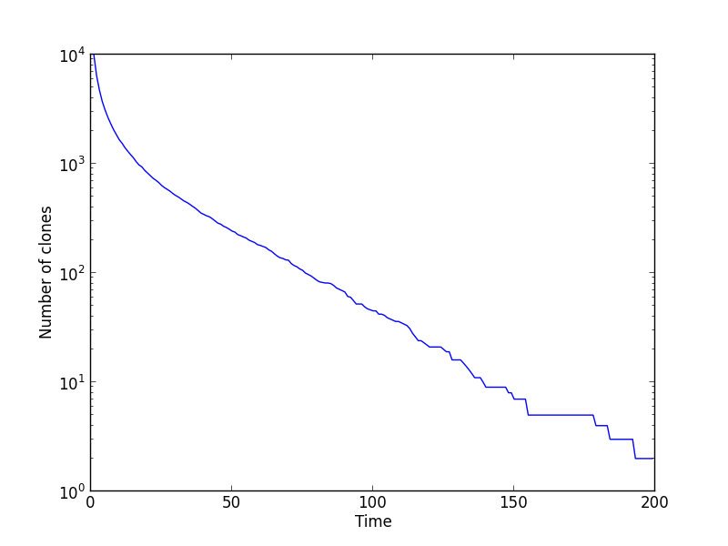
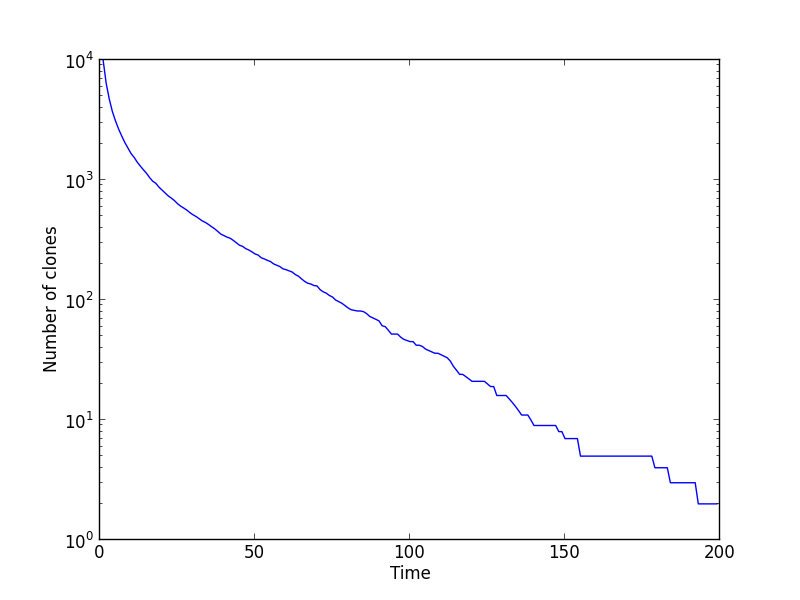

Condensation of genotypes driven by epistasis¶
Epistatis and rugged landscapes favour more clonal populations compared to smooth and monotonic landscapes. This process is observed in this example, which can be found in condensation.py.
After importing the modules, we set up the population:
L = 64 # simulate 64 loci
pop = ffpop.haploid_highd(L) # produce an instance of haploid_lowd with L loci
pop.outcrossing_rate = 0 # make the species asexual
pop.set_random_epistasis(0.05) # add a random epistatic effect
pop.set_allele_frequencies(np.ones(L)*0.5, 10000) # initialize the population in LD with allele frequencies 1/2
We let the population evolve and collect statistics on fitness, clone size, and participation ratio along the way:
pfit = pop.get_fitness_statistics()
popstat = []
for gen in xrange(1, 200):
#append current statistics to the list
pfit = pop.get_fitness_statistics()
popstat.append([gen,pfit.mean, pfit.variance, pop.participation_ratio, pop.number_of_clones])
#evolve for dt generations and clean up
pop.evolve()
pop.unique_clones()
pop.calc_stat()
Finally, we plot some observables on the clone structure of the population, the participation ratio and the number of clones:
 

Epistasis has the effect of reducing the number of clones over time and, equivalently, increasing the participation ratio. After 200 generations, the number of clones is \(\mathcal{O}(1)\).